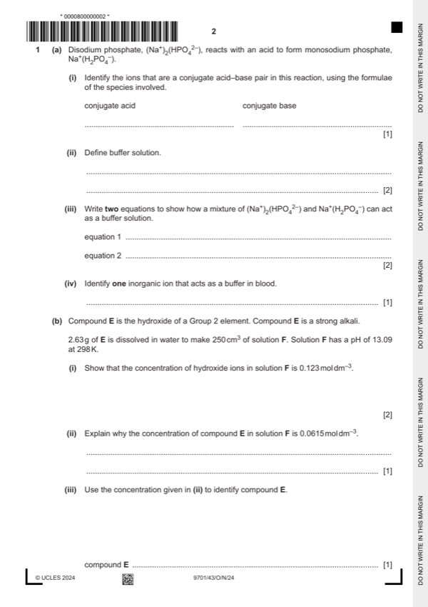

Question 1

Original paper page 2
Part 1(a)(i) — solution
conjugate acid conjugate base 1
H2PO4– HPO42– [1] BOTH
Mark points
- Include the ideas shown in the solution above.
Part 1(a)(ii) — solution
allows only small changes in pH / resists changes in pH [1] 2
when small amounts of acid or alkali/base / H+ or OH– are added [1]
Mark points
- Include the ideas shown in the solution above.
Part 1(a)(iii) — solution
- Na+2HPO42– + H+ → Na+H2PO4– + Na+ 2
- or HPO42– + H+ → H2PO4– [1]
- Na+H2PO4– + NaOH → Na+2HPO42– + H2O
- or H2PO4– + OH– → HPO42– + H2O [1]
Mark points
- Na+2HPO42– + H+ → Na+H2PO4– + Na+ 2
- or HPO42– + H+ → H2PO4– [1]
- Na+H2PO4– + NaOH → Na+2HPO42– + H2O
- or H2PO4– + OH– → HPO42– + H2O [1]
Part 1(a)(iv) — solution
HCO3– / hydrogen carbonate [1] 1
Mark points
- Include the ideas shown in the solution above.
Part 1(b)(i) — solution
Answer: OR [OH–] = seen
- either 10–13.09 or [H+]= 8.1 10–14 seen [1] 2
- 8.1x10–14 [OH–] = 1 10–14 seen [1]
- OR [OH–] = seen
- pOH = 0.91 [1]
- [OH–] = 10–0.91 seen [1]
Mark points
- either 10–13.09 or [H+]= 8.1 10–14 seen [1] 2
- 8.1x10–14 [OH–] = 1 10–14 seen [1]
- OR [OH–] = seen
- pOH = 0.91 [1]
- [OH–] = 10–0.91 seen [1]
Part 1(b)(ii) — solution
Answer: OR
2 moles of OH– in one mole of E / X(OH)2 1
OR
there are two hydroxide ions in each formula unit of E / X(OH)2 [1]
Mark points
- Correct result: OR
Part 1(b)(iii) — solution
Answer: AND barium hydroxide / Ba(OH)2 [1]
- 0.0615 0.25 = 0.0154 moles of E 1
- RFM = 2.63 / 0.0154 = 170.8 / 171 OR RAM = 34 – 2.63 / 0.0154 = 137.1 /137
Mark points
- 0.0615 0.25 = 0.0154 moles of E 1
- RFM = 2.63 / 0.0154 = 170.8 / 171 OR RAM = 34 – 2.63 / 0.0154 = 137.1 /137
Part 1(c) — solution
- [M1] Obtain/use: mol3 dm–9 [1] ecf from
Mark points
- [M1] Obtain/use: mol3 dm–9 [1] ecf from
Part 1(d) — solution
Answer: OR Hlatt/LE and Hhyd more exothermic/more negative for Mg [1] · OR Hlatt changes more / faster for Mg [1] · OR Hsol becomes less exothermic / less negative for Mg [1]
- [M1] Hlatt and Hhyd less exothermic (down the group) 3
- [M2] Hlatt changes more than Hhyd (down the group)
- [M3] Hsol becomes more exothermic (down the group)
Mark points
- [M1] Hlatt and Hhyd less exothermic (down the group) 3
- [M2] Hlatt changes more than Hhyd (down the group)
- [M3] Hsol becomes more exothermic (down the group)